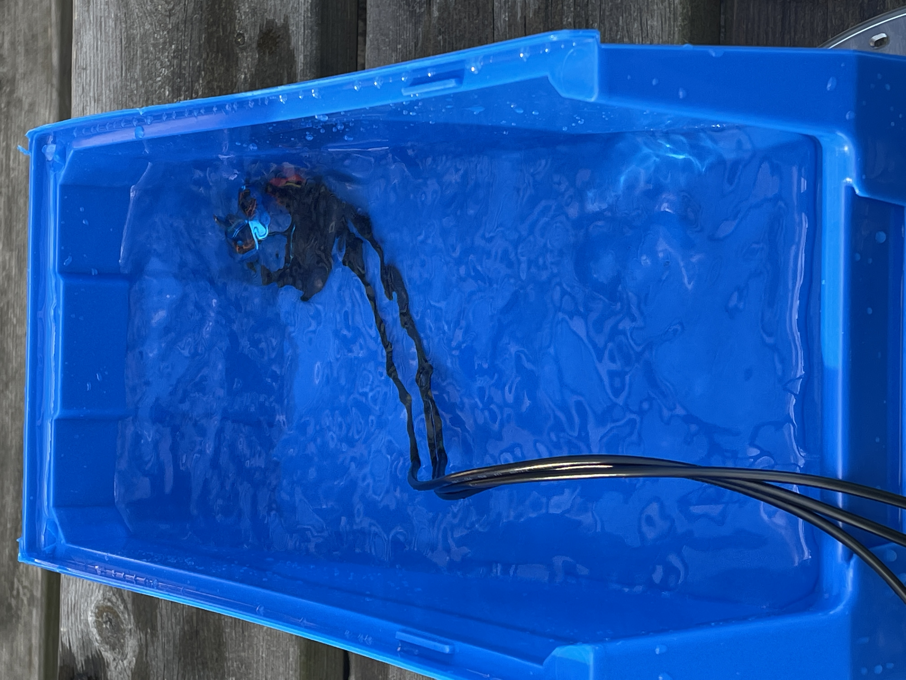
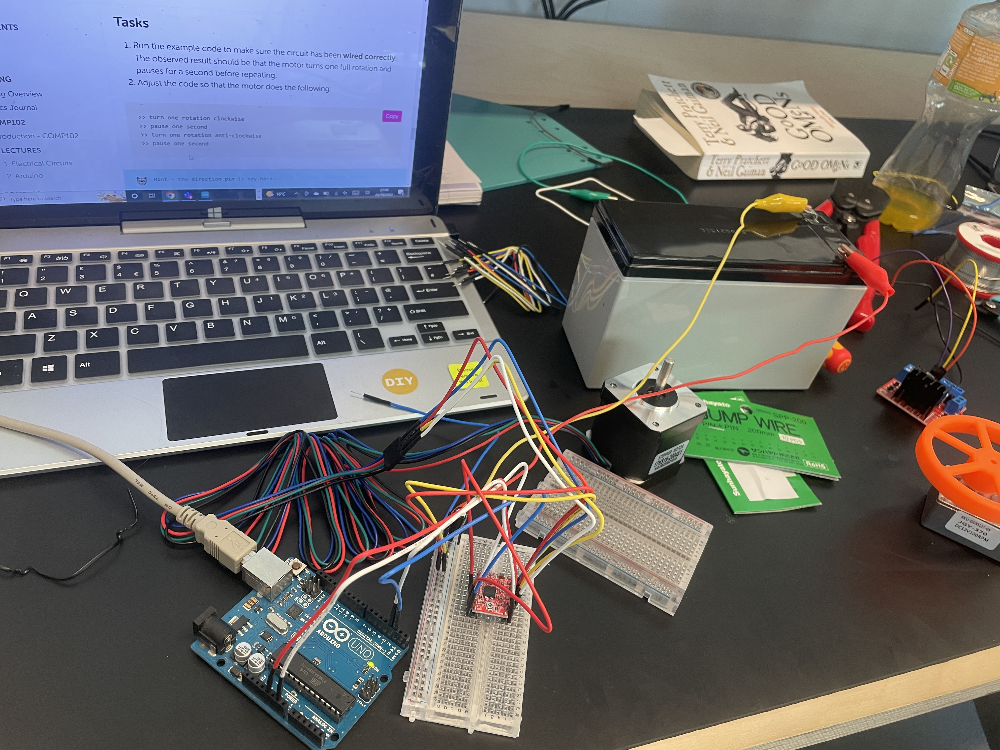

To start our project of designing and developing a robot that can search an area of water and collect the scum and rubbish from the surface as it moves. To begin with we had to make a short presentation about the brief we have been given and how we plan to fulfill said brief with our robot. In this we decided we would use a two-hull, catamaran style craft which is propulsed by two propellers. With this came our very first Major design decision which was what hull style we wanted to use going forward, to decide we individually modelled various hulls and compared designs to find the better of them.
After deciding a hull design we then had to move onto more physical design decisions such as the materials we would construct everything out of, with a few ideas being compared we decided upon something similar to the way a surfboard is constructed with a polystyrene body coated externally with fiberglass and an epoxy resin to seal and waterproof it. The polystyrene would provide the bouyancy whilst the epoxy protected the porous polystyrene from soaking in the water. We also had to decide other things such as in or outboard motors, aswell as how we would implement the style we choose. We went with inboard as they were much easier to protect from the elements allowing a much longer life for the component and less chance of failure, however we did run tests leaving motors is slightly salty water for long periods of time runnning to see how it would affect them and after a few hours of running and days to rest no noticable issues could be found Propeller design was undertaken by harry and he produced a relatively agressively pitched propeller to shift lots of water but not a high speed hopefully avoiding any cavitation issues entirely. 
With a hull design chosen and an idea of how we were going to progress we got started with some of the slightly larger construction points, begining with the most important of all, The hull. For this harry created a custom hot wire cutter using some thin wire and some pvc piping bent in order to create tension. An early test consisted of one person each end of the wire holding it taught and running it around a laser cut guide to cute the polystyrene to the required size for the hull. He improved this method with the custom hot wire cutter and completed the second hull.
this is also when the search for an adequate gps began as most low end modules had a very large margin of error and took a long time to get started properly, they cant provide as much or as accurate data as some of the more advanced modules, however cost became a relatively significant factor.
We started work on the hardware and software of the robot, harry working in deoth on the data transmission area of the project using a router to send and recieve data dependant on the states of the machine or what data is is recieving at that given moment, and i have started some very minor work on the gps Functions as the gps we currently have doesnt appear to be translatable and are yet to order naything new to try. Some work has already been done towrds motor control as a lot of this came up during workshops previous and can be very handy to the project now.
It is clear what chip we would like the GPS to have, the 'ZED FP9' chip as it is RTK compatible and has a precision down to a centimeter, yet we keep running into issues of ordering the correct module from a good websire or one close enough with no issues regarding import. I have ordered a relatively cheaper module to deliver home to work on over the christmas break. It is far from an ideal board but may have to do for now.
With no time to order the new chip and board and have any significant time with it, also considering i have put in a good chunk of work into this cheaper board it no longer seems viable to order the module we would have liked. Thus we will attemot to make do as best as we can with the board to hand and use it to its full capability possibly using other components to substitute where it may be lacking. i have made good progress with the less advanced board it just cannot currently get a lock on any satelite to provide the data required.
As the deadline is approaching we have ran into some issues recognising that the GPS data isnt being provided correctly and I am unsure why, no matter where i place it, it cant seem to find a connection to any satelite, and when its data is read directly it is recognising satelites but appears not to connect with them, hopefully it is a localized issue however i will be reviewing my code a lot over this time.
A very major issue has occured very late on in the project, whilst curing the epoxy for the hull and adding another layer some reaction occured causing the polystyrene to melt away creating large cavities in the hull. We have no replacement hulls meaning we need some way to repair this current hull.
Harry has gone out to purchase polyfiller and silicon seal to protect the new filling, we will have to see how this will hold up during testing it is far from a long term solution but something is needed to attempt to test the robot.
With a location change test and changes to the code all GPS issues have been resolved as it finally displayes a somehwat accurate lattitude and longitude value. It takes a while to get a lock on a satelite but seems fairly consistent when it does.

Today has mainly consisted of a workshop creating a very simplistic A.I robot requiring no programming. The concept is to create a basic robot that reacts to light and has a noticable behaviour pattern to interact with it such as shy being light avoidance. This is achieved by using two Light dependant resistors to control actuators of some kind to create movement By the end of the session We had created a working, very barebones circuit that reacted to the light around it and attempted to move about its environment, in attempting to have our bot be as small as possible we ran into multiple problems the main one being the motors having very little torque, and thus the weight of our machine was integral. It was obvious the breadboard was not going to work and was only a prototype for the circuit required to make it move.

Our second iteration used a small piece of stripboard cut down as small as the circuit required, while it showed some small progress it was still not ideal as only with some help would the motors be able to move. We had to further reduce the weight of the vehicle itself or find some way to generate more torque in the wheels.

This lead to our third iteration which was very intersting. Stripping it down to the most basic form possible it was essentially soldered in 3D entirely removing the need for the board. Components were soldered directly to one another to form the circuit without any other form of conductive medium. We attached the circuit to a small rectangle of cardboard with hot glue, still it had too much weight and would not move independantly.
This is when harry created our final iteration with a tiny 3D printed chassis with incredibly little infil to reduce the weight massively. To reduce the drag a paperclip end was used to contact the ground and finally we had a braitenburg robot that would react to light and could actively move itself without the need for any assistance.
After finishing the most basic form of Braitenburg robot with only electrical components and no proccessor it was time to form new pairs and build the same robot however this time it would involve the use of a microproccesor in order to form a finite state machine (fsm) more akin to the idea behind a Braitenburg robot that would have various behavioural patterns dependant on its "mood".
A very Basic Finite sate machine requires very little addition to the current Braitenburg robot, all it needs is to use the microproccesor to switch between functions, essentailly doing the same as manually switching the light sensors to make it react in various ways. In a base form this is incredibly easy as you just create states with values attatched and chose when to switch between them.
>In this workshop we were tasked with giving the previous Braitenburg vehicle some specific behaviours using state machines, some were realatively easy as the similarly followed the regular behaviour of a Braitenburg but some were noticably different and much more difficult to achieve.
This workshop provided an introduction into further motor control including Odometry, all using encoded motors to take measurements as the motors operate. For the use of encodors we had to manually work out the gear ratio comparing one full rotation of the motor to how many ticks were measured to have passed by the encoder itself, and the further using this to to calculate the actual distance traveled using the circumference of the wheels and these ratios and values. All in order to make the robot move exactly one metre and come to a stop. 
The other workshop further encapsulated how to actually use the motors in accordance with the provided H-Bridge to correctly control them, the H-Bridge
allows you to more accurately control the speed of the motors as well as actually alternating the direction of the motors using the microproccesor aswell.
This paired with the odometry and encoders allows for very fine control of the motors to get incredibly accurate results in movement.